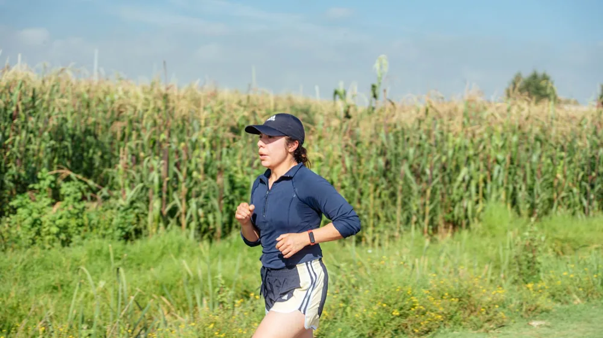

런닝 초보자, 페이스 조절 실패하면 부상? 성공하는 3가지 비법
사진: João Godoy / Pexels (무료 이미지, 출처 표기)
런닝 시작이 어렵고 금방 지치시나요? 당신의 런닝 경험을 바꿀 페이스 조절의 모든 것

런닝을 시작했지만 얼마 못 가 지치거나 부상으로 중단하는 경우가 많습니다. 특히 런닝 초보자라면 무작정 빠르게 달리기보다는 자신에게 맞는 페이스를 찾는 것이 무엇보다 중요합니다. 이 글에서는 런닝 초보자를 위한 페이스 조절의 핵심 원리부터 나만의 적정 페이스를 찾는 구체적인 방법, 그리고 지속적인 성장을 위한 훈련법까지 자세히 안내해 드립니다.
런닝 초보자, 왜 페이스 조절이 중요할까요?
런닝에서 페이스 조절은 단순히 '속도'를 조절하는 것을 넘어, 부상 예방, 꾸준한 운동 습관 형성, 그리고 운동 효과 극대화에 필수적인 요소입니다. 처음부터 너무 빠른 속도로 달리면 신체에 과도한 부담을 주어 무릎, 발목 등 부상 위험이 커집니다.
또한, 에너지를 비효율적으로 소모하게 되어 쉽게 지치고 런닝에 대한 흥미를 잃기 쉽습니다. 적절한 페이스는 유산소 능력을 꾸준히 향상시키고, 더 오랫동안 즐겁게 달릴 수 있는 기반을 마련해 줍니다.
나에게 맞는 '적정 페이스' 찾는 3가지 방법
자신에게 맞는 런닝 페이스를 찾는 것은 성공적인 런닝 습관의 시작입니다. 다음 세 가지 방법을 통해 당신의 몸이 편안하게 느끼는 속도를 찾아보세요.
- 대화 가능 속도 (Talk Test): 가장 간단하고 직관적인 방법입니다. 옆 사람과 자연스럽게 대화할 수 있는 정도의 속도, 혹은 노래를 흥얼거릴 수 있는 정도의 숨이 차지 않는 페이스를 유지하는 것입니다. 문장을 끊기지 않고 말할 수 있다면 적정 페이스입니다.
- 자각도 RPE (Rate of Perceived Exertion): 주관적인 노력 강도를 1부터 10까지의 척도로 표현하는 방법입니다. 1이 '아주 편안함', 10이 '최대 노력'이라면, 초보자는 4~6 수준의 노력을 유지하는 것을 목표로 합니다. 약간 힘들지만 계속할 수 있는 정도입니다.
- 심박수 측정: 스마트워치나 심박수 측정기를 활용하여 자신의 심박수를 모니터링하는 방법입니다. 일반적인 초보자는 최대 심박수의 60~70% 수준을 유지하는 것이 좋습니다. 최대 심박수는 대략 '220 - 자신의 나이'로 계산할 수 있습니다 (예: 30세라면 220-30 = 190bpm). 2026년 8월 기준으로 많은 웨어러블 기기가 이 기능을 제공하고 있습니다.
초보 러너를 위한 단계별 페이스 조절 훈련법
적정 페이스를 찾았다면, 이제는 효과적인 훈련을 통해 런닝 능력을 향상시킬 차례입니다. 다음 단계별 훈련법을 시도해 보세요.
- 걷기-달리기 반복 훈련 (Walk-Run Method): 런닝을 처음 시작하는 사람에게 가장 효과적인 방법입니다. 처음에는 걷는 시간을 길게, 달리는 시간을 짧게 시작하여 점차 달리는 시간을 늘려갑니다. 예를 들어, 5분 걷고 1분 달리기를 반복하다가, 점차 3분 걷고 2분 달리기, 1분 걷고 3분 달리기 등으로 비율을 조절합니다.
- 지속주 훈련 (Steady Run): 일정한 페이스로 비교적 긴 시간 동안 달리는 훈련입니다. 대화가 가능한 정도의 편안한 페이스로 20~30분 정도 꾸준히 달려보세요. 이는 유산소 능력을 향상시키고 런닝 지구력을 기르는 데 도움이 됩니다.
- 인터벌 훈련 (Interval Training): 빠르게 달리는 구간과 천천히 회복하는 구간을 반복하는 훈련입니다. 초보자는 짧은 구간(예: 30초 빠르게 달리기)과 긴 회복 구간(예: 2분 천천히 걷거나 조깅)을 반복하는 방식으로 시작하는 것이 좋습니다. 점진적으로 달리는 시간을 늘리고 회복 시간을 줄여나갑니다.
페이스 조절 시 흔히 하는 실수와 주의사항
성공적인 런닝을 위해 피해야 할 일반적인 실수와 주의사항들을 확인하세요.
- 처음부터 너무 빠르게 달리는 것: 많은 초보 러너들이 범하는 가장 흔한 실수입니다. 이는 부상으로 이어지거나 쉽게 지쳐 런닝에 대한 흥미를 잃게 만듭니다. '천천히, 꾸준히'를 기억하세요.
- 다른 사람과 자신을 비교하는 것: 각자의 체력 수준과 컨디션은 다릅니다. 옆 사람의 페이스나 SNS에 올라온 타인의 기록에 연연하지 말고, 오직 당신의 몸에 집중하여 당신만의 속도를 찾는 것이 중요합니다.
- 몸의 신호를 무시하는 것: 통증이나 과도한 피로는 몸이 보내는 위험 신호입니다. 무리하게 달리기를 강행하면 심각한 부상으로 이어질 수 있으니, 불편함이 느껴지면 즉시 달리기를 멈추고 휴식을 취하세요.
- 준비운동과 마무리운동 소홀: 런닝 전후 스트레칭과 가벼운 워밍업, 쿨다운은 부상 예방과 근육 회복에 필수적입니다. 이 과정을 소홀히 하지 않도록 주의합니다.
꾸준함을 위한 런닝 장비와 마음가짐
적절한 장비는 런닝의 효율과 즐거움을 높여줍니다. 발 타입에 맞는 런닝화를 선택하고, 페이스와 심박수를 측정할 수 있는 스마트워치와 같은 웨어러블 기기를 활용하면 동기 부여에도 도움이 됩니다.
무엇보다 중요한 것은 꾸준함입니다. 주 3~4회 정도 규칙적으로 런닝을 하고, '짧은 거리 완주'나 '특정 시간 동안 달리기'처럼 작은 목표를 설정하여 성취감을 느껴보세요. 이 목표들은 런닝을 지속하는 원동력이 될 것입니다.
🔗 이 글도 함께 보면 좋아요: 초보자를 위한 효과적인 운동 시작 가이드
관련 추천 상품
이 포스팅은 쿠팡 파트너스 활동의 일환으로, 이에 따른 일정액의 수수료를 제공받습니다.